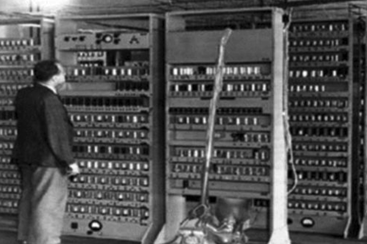

Pengenalan Komputer

Definisi Komputer
Komputer lebih dikenal oleh masyarakat sebagai alat teknologi atau
elektronik yang dapat menginput data, memproses data, dan menghasilkan
output berupa informasi. Kata komputer berasal dari bahasa Yunani yakni
Computare artinya adalah menghitung.
Pengertian komputer menurut para ahli:
-
Donald. H. Sanders, komputer adalah suatu elektronik yang
dapat dipergunakan untuk melakukan manipulasi data dengan cepat dan
tepat, komputer dibuat agar secara otomatis dapat menerima dan
menyimpan data yang di input, memprosesnya, dan kemudian
menghasilkan output berdasarkan instruksi-instruksi yang telah disimpan
dalam memori.
-
Robert. H. Blissmer, mengatakan bahwa komputer adalah alat
elektronik yang bertugas untuk menerima masukan (input), lalu masukan
tersebut diproses dengan instruksi yang sudah diberikan, kemudian
komputer dapat menyimpan perintah-perintah dan menghasilkan output
dalam bentuk informasi.
-
Gordon. B. Davis, mengartikan bahwa komputer adalah
sebuah tips khusus untuk alat menghitung yang memiliki sifat yang
sesuai
Secara umum pada dasarnya komputer memiliki
ciri-ciri sebagai berikut:
-
Merupakan kumpulan alat elektronik yang digabungkan.
-
Mampu menginput, memproses inputan, dan menyimpan data.
-
Dapat menghasilkan informasi sesuai permintaan pengguna.
Tiga hal utama di dalam sebuah komputer, yakni :
-
Alat Masukan (Input Device) seperti Keyboard, Mouse, dll
-
Alat Pemroses Data (Processor)
-
Alat Keluaran (Output Device) seperti printer, speaker, dan monitor.
Generasi komputer dari tahun ke tahun:
-
Generasi Pertama (1941 – 1952): Menggunakan tabung hampa udara sebagai komponen utama. Contohnya
adalah ENIAC.
-
Generasi Kedua (1952-1956-1958): Menggunakan transistor. Contohnya adalah Super Komputer.
-
Generasi Ketiga (1958 – 1970): Menggunakan IC Chip (Integrated Circuit) dan mulai bisa melakukan
multitasking.
-
Generasi Keempat (1970 – 1980): Ditandai dengan munculnya Microprocessor, seperti Intel 4004.
-
Generasi Kelima-Sekarang (1980 – saat ini): Menggunakan LSI (Large Scale Integration) dan
munculnya semiconductor serta microprocessor.
-
Generasi Keenam (Masa Depan): Ditandai dengan kemajuan yang lebih mutakhir dari teknologi saat
ini, seperti kemampuan untuk melakukan proses prediksi.
Penggolongan komputer:
-
Berdasarkan Processor: Mainframe, Minicomputer, dan Personal Computer (PC).
-
Berdasarkan Bentuk dan Ukuran Fisik: Tower, Desktop, Portable, Notebook, Subnotebook, dan Palmtop.
-
Berdasarkan Jenis Data yang Diolah: Analog, Digital, dan Hybrid.
-
Berdasarkan Penggunaannya: General Purpose Computer dan Special Purpose Computer.